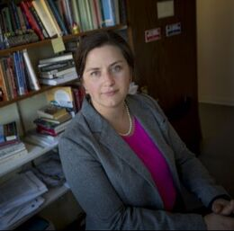
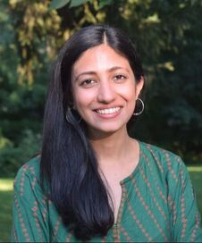
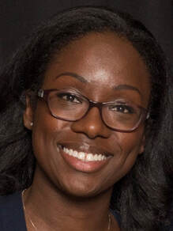

Who we are
Leadership
Our leadership team is connected to every major organization working on gender in political science. We serve in administrative roles in our universities and hold editorships at top journals and with flagship book series.
Directors
-
Professor of Government
University of Texas at AustinRead bio
Professor of Political Science at the University of Texas. Her research is in comparative politics with an emphasis on Latin America, gender and politics, and comparative political institutions, employing both quantitative and qualitative approaches to examine how institutions shape the political behavior of citizens and elites. She is author of two Cambridge University Press monographs and the leading undergraduate textbook for gender and politics, Women, Politics, and Power. Her first monograph, Gendering Legislative Behavior (Cambridge, 2016), won the Alan Rosenthal Prize from APSA’s Legislative Studies Section. She is co-editor at the British Journal of Political Science and of the Cambridge Elements in Gender and Politics series, past president of the Midwest Women’s Caucus, and a founding director of EGEN.
-
Associate Professor of Political Science
University of California, BerkeleyRead bio
Associate Professor in the Department of Political Science at the University of California, Berkeley. She studies the causes and consequences of women’s political representation, including how electoral gender quotas shape the substantive representation of women’s interests in national legislatures and how exposure to women officeholders affects citizen behavior. Her current research examines gender and climate politics, including a book project on the origins of gender differences in climate attitudes worldwide. Her work has appeared in the American Political Science Review, American Journal of Political Science, Journal of Politics, and International Organization.
-
SNF Agora Professor
Johns Hopkins UniversityRead bio
SNF Agora Professor of Political Science at Johns Hopkins University and a 2025–2027 fellow with the Andrew Carnegie Foundation. Since 2023 she has served as a head editor of Comparative Political Studies. Her research examines the causes and consequences of voting rights reform; candidate socialization, recruitment, and election; bias against women in politics; and political ambition. Her 2018 book Forging the Franchise: The Political Origins of the Women’s Vote won the Gregory Luebbert Award for the best book in comparative politics from APSA. In 2023 she won APSA’s Theda Skocpol Emerging Scholar Prize.
Executive Board
-
Associate Professor of Global Development Policy
Pardee School, Boston UniversityRead bio
Associate Professor of Global Development Policy in the Frederick S. Pardee School of Global Studies at Boston University. Her work identifies the conditions under which political, economic, and social systems rebalance gendered power, bridging development economics and feminist theory with extensive field research in South Asia. Her 2020 book Women, Power, & Property: The Paradox of Gender Equality Laws in India (Cambridge) won the Gregory Luebbert Award for the best book in comparative politics from APSA. She has received an NSF CAREER Award and is a Marshall Scholar and Truman Scholar. She is Co-Founder of the BU–State Department Alliance for Afghan Women’s Economic Empowerment.
-
Professor of Public Policy
Harvard Kennedy SchoolRead bio
Political scientist and Professor of Public Policy at the John F. Kennedy School of Government at Harvard University, currently serving as Academic Dean for Faculty Development. Her research and teaching interests include the causes and consequences of civil war and other forms of political violence, gender and conflict, and qualitative and mixed research methods. Her first book, Rape During Civil War (Cornell, 2016), examines variation in the use of rape during recent civil conflicts, drawing on fieldwork in Sierra Leone, Timor-Leste, and El Salvador; it received APSA’s Theodore J. Lowi First Book Award and best book awards from two sections of the International Studies Association. Her second book, Lynching and Local Justice: Legitimacy and Accountability in Weak States (Cambridge, 2020), is coauthored with Danielle F. Jung.
-

Professor of Public Policy
Hobby School of Public Affairs, University of HoustonRead bio
Professor of Public Policy at the Hobby School of Public Affairs, University of Houston. Her research interests focus on American politics and public policy, with a focus on state and local politics, gender and politics, the politics of criminal justice, research methods, and environmental politics. She writes books about the failures of local democracy and local inequality: Women in Politics in the American City examines the effect of women mayors and city council members on urban politics; The Power of the Badge, with Emily Farris, examines the role of sheriffs in creating and maintaining inequality in the United States; and The Hidden Face of Local Power evaluates the role appointed boards play. She has been widely published in academic journals and in the popular press, including NPR, the New Yorker, the Atlantic, the New York Times, and the Washington Post.
-
Associate Professor of Government
Cornell UniversityRead bio
Associate Professor in Government at Cornell University. She directs the Gender and Security Sector Lab, funded by Global Affairs Canada, and is PI of the NSF CAREER award “The Domestic and International Politics of Global Police.” Her research focuses on conflict and peace processes, particularly state building in the aftermath of civil war: international involvement in security assistance to post-conflict states, gender reforms in peacekeeping and domestic security sectors, and the relationship between gender and violence. She is co-author of Positioning Women in Conflict Studies (Oxford, 2024) and Equal Opportunity Peacekeeping (Oxford, 2017), which won the Conflict Research Studies Best Book Prize and APSA’s Conflict Processes Best Book Award.
-

Assistant Professor
School of International Service, American UniversityRead bio
Assistant Professor in the Department of Politics, Governance & Economics at the School of International Service, American University. From 2020 to 2024 she was Assistant Professor in the Department of Political Science at Yale University. She completed her PhD in political science at Columbia University and was previously a doctoral candidate fellow at the Center for Global Development in Washington, DC. In Pakistan she is an Associate Fellow at the Institute of Development and Economic Alternatives (IDEAS). She is a member of the EGEN and EGAP research networks.
-
Bela Kornitzer Distinguished Professor of Political Science
Washington University in St. LouisRead bio
Bela Kornitzer Distinguished Professor in the Department of Political Science at Washington University in St. Louis. Her work focuses on the causes and consequences of women’s political representation in high-income democracies and across the globe. She has published widely in the American Political Science Review, American Journal of Political Science, and Journal of Politics. She is the winner of a Fulbright Fellowship, National Science Foundation support, and several paper awards including APSA’s Lawrence Longley Award and MPSA’s Sophonisba Breckinridge Award. She is founding editor of the Cambridge Elements in Gender and Politics series and a founding member of EGEN.
-
Professor of Gender and Politics
Royal Holloway, University of LondonRead bio
Professor of Gender and Politics at Royal Holloway, University of London. Her research explains why women’s exclusion from politics matters and how it can change. Translating that research into action is a priority: she advises policymakers, think tanks, and international organizations on evidence-based practices that boost women’s political participation and advance gender equality, and has led projects for UN Women, United Cities and Local Government, and the Gender Equity Policy Institute. Her commentary and analyses have appeared in the Washington Post, NPR, and the Boston Review, and she speaks on Latin American politics for outlets including the Journal of Democracy.
-
Assistant Professor of Political Science
Stanford UniversityRead bio
Assistant Professor in the Department of Political Science at Stanford University. Her work examines how and when women gain access to politics, as citizens and as representatives, in South Asia, combining experimental methods, causal inference, network analysis, and survey research with in-depth qualitative fieldwork. Her first monograph, The Patriarchal Political Order: The Making and Unraveling of the Gendered Participation Gap in India, was published by Cambridge University Press in 2023. Her research has received the Juan Linz Award for the best dissertation in the comparative study of democracy.
-

Professor of Public Policy
School of Global Policy and Strategy, UC San DiegoRead bio
Professor in the School of Global Policy and Strategy and the Department of Political Science at the University of California San Diego. She serves as Research Advisor for the RESOLVE Network at the United States Institute of Peace and associate editor at the Robert Jervis/H-DIPLO International Security Studies Forum. Her research focuses on political violence and conflict processes, with an emphasis on women’s participation in and experiences with contentious politics. She is co-lead on a Blue Shield Foundation project examining Californians’ experiences with violence across their lifespans (CalVEX).
Join the network
Sign up to hear about upcoming workshops, research prizes, and opportunities across the gender and politics community. Join EGEN.
About the network
Experience behind the network
Between us we have decades of experience researching and teaching gender and politics at leading universities in the United States, the United Kingdom, and beyond. Our members edit the discipline’s major journals and its flagship book series; our work has been recognized with its leading book and article prizes and with Andrew Carnegie Fellowships, and supported by the National Science Foundation and other major funders. We advise UN Women, USAID, and the World Bank, and partner with organizations working to advance women’s political leadership around the world.